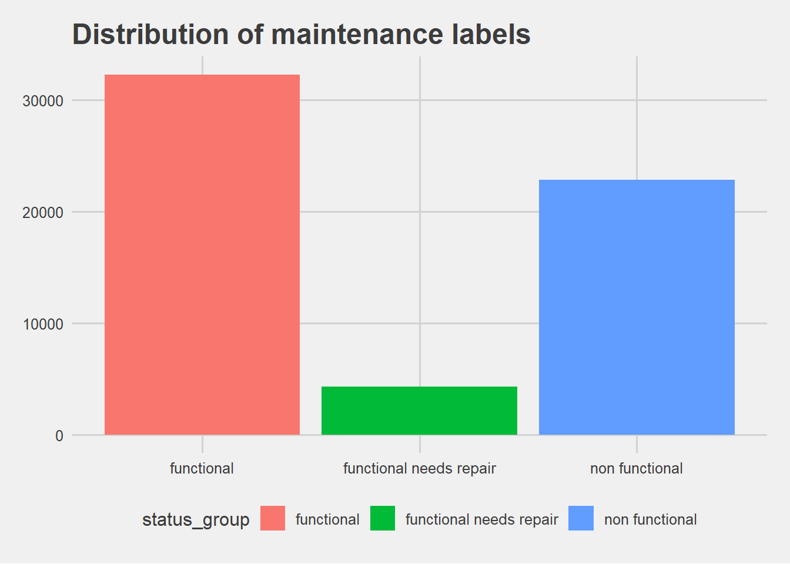

# PYTHON
# There are some issues with reticulate which causes R to crash when using
# python chunks in Rmarkdown with python from a conda environment
# Might not be the case on Ubuntu / AWS servers but for now we use a workaround
# with py_run_string()
py_run_string("
import sklearn as sk
import numpy as np
import pandas as pd
")data <- read.csv("../data/raw/water_pump_set.csv")
labels <- read.csv("../data/raw/water_pump_labels.csv")
features <- read.csv("../data/raw/water_pump_features.csv")
df <- merge(data, labels, by="id")Before we start modelling the data we should understand the data. In this dataset we find a total of 40 measured variables to be used as features in our models. In this section we will aim to understand these features and make motivated choices to keep, remove or transform these features from our prediction model.
Our data consists of, - 59400 observations - 40 features - 3 types of labels to predict
Not all of the features are necessarily useful for predicting the moment of failure of water pumps, for instance the measurement id won’t be of much use at it is unique.
First we’ll take a look at the raw data to fully understand the structure of our data, especially how exactly the data was measured over time. We have 59400 observations.
The raw data is not considered big-data in the sense that it will fit on a single machine; we do not have to worry about batch processing because of sheer file size with ‘only’ 59400 observations. The number of features is also a mere 41! Enough to make a interpretable predictive model and this will allow us to dive deeper into the individual variables.
head(df, n=10) %>% ShowDataTable()With the data above we will aim to predict the labels, indicating the need of repair or rather the functional state of water pumps. There are 3 possible labels,
Each of these labels is associated with a unique measurement id that we can match to a single observation.
The label distribution is heavily skewed, the ‘functional needs repair’ group is severely under represented.
df %>% ggplot(aes(x = status_group, fill = status_group)) + geom_bar() +
ggtitle("Distribution of maintenance labels") +
geom_bar() +
theme_fivethirtyeight() 
The water pump data is surprising in that it is not really a timeseries that you would normally see in similar cases where the objective is to predict system failure using sensor data over time. In the data we’ll find a feature named wpt_name, short for waterpoint name, a name that is intuitively unique for every water pump. However… When we look at the non-numerical variables we see that many of the labels have a large number of unique values, as expected, but these also include wpt_name!